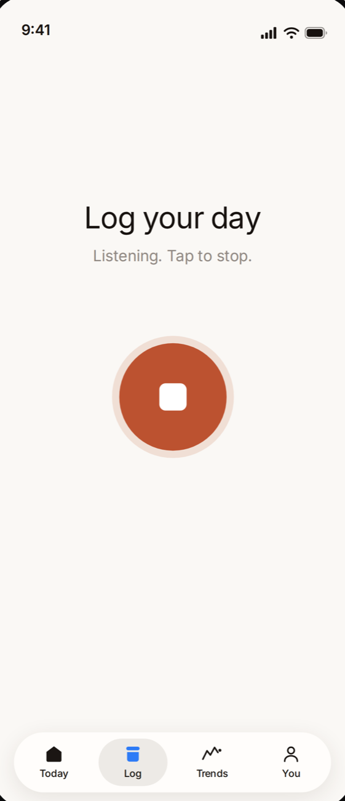
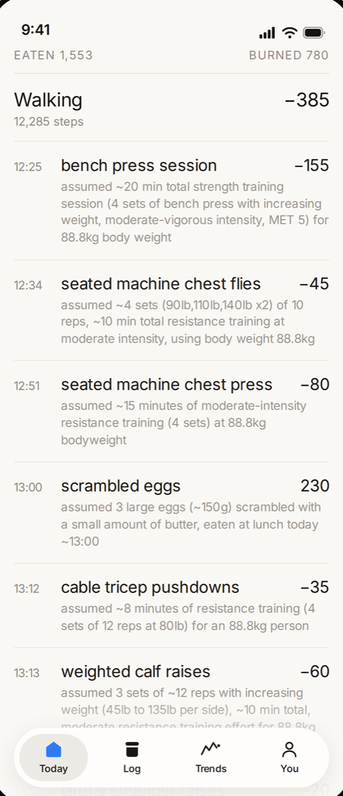
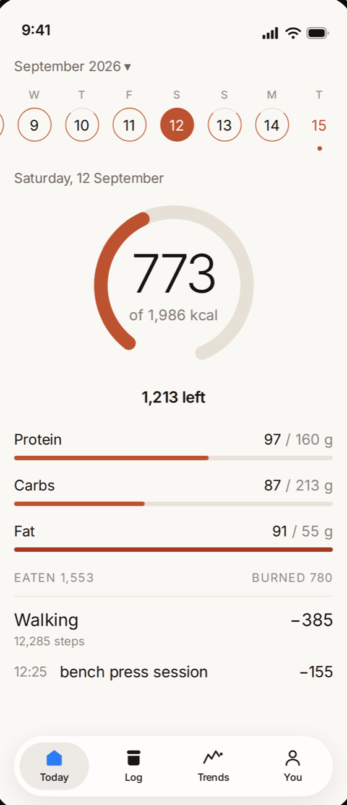
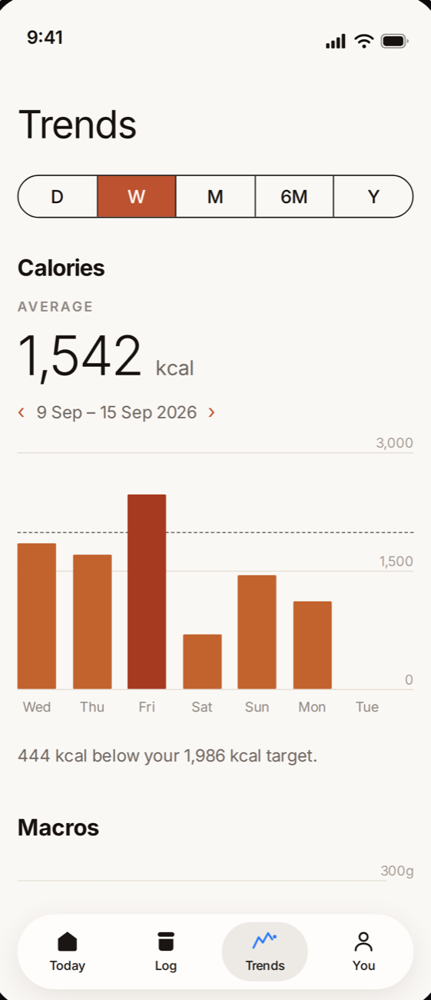
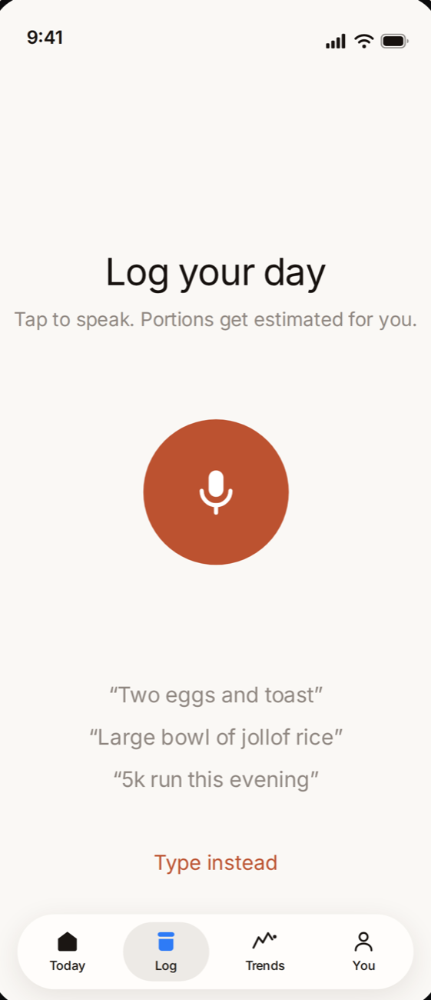

Say what you ate and what you did, in your own words. Ragus turns it into calories, macros and burn — portions estimated, exercise subtracted.
iOS 15.1 and later · Free


Works for what you actually eat
Most trackers make you do the data entry. Ragus does it for you.
Whole meals at once. Yesterday's dinner if you forgot — just say when.
Tap the microphone and talk, or type if you'd rather. “A bowl of rice” is a perfectly good input — you don't need to know the grams.
Your words become food, portions, calories and macros — and the exercise in the same sentence gives part of the day back.
One number for today, and a trend showing where the last few weeks are actually taking you.
Every estimate, explained
Each entry carries the assumption behind it: how many eggs, what size, how long the session, at what effort. If it guessed a medium portion and you had a large one, you can see that — and fix it by describing it again.
When it isn't confident, it says so, rather than presenting a made-up number as fact.
Today
Eaten, burned, and what's left against a target built from your body and your goal — with the calculation laid out on the You tab, not hidden.
Protein, carbs and fat sit underneath. Connect Apple Health and walking counts towards your day without you logging a step.

Trends
Daily averages across a week, a month, six months or a year, against your target. A weight line drawn from what you've actually logged, not from a formula's optimism.
Days you didn't log are left out of the average — missing data, not a deficit.

Food that isn't in the database
Most trackers were built around a Western supermarket. Search for waakye, goat meat or a bottle of malt and you get nothing usable — or three wrong answers and no way to tell which is which.
Ragus doesn't look things up in a fixed list. It works out what you described, and remembers it, so the next person who says the same thing gets the answer instantly.

“Miss it by a hundred and nothing breaks. Miss it by five hundred and I'll mention it.”
— Sugar, who lives in the app
Nobody weighs their dinner every day, and a tracker that pretends otherwise gets abandoned in a week. Close and sustained beats precise and quit.
The only thing that leaves your phone is the text of what you logged, which is turned into numbers and stored on your account. That's it.
The full detail is in the privacy policy.
Accurate enough to be useful, and honest about the rest. Ragus estimates portions from your description — which is what a dietitian does when you describe a meal, and considerably better than the alternative, which for most people is not logging at all. Every entry shows what was assumed.
No. You can — say “180 grams of rice” and it uses that. But the whole design assumes you won't.
In the same sentence as the food. “A chicken wrap and then a 5k run” records both, and the run counts against your total rather than sitting in a separate screen you never open.
Your speech is turned into text by Apple's speech recognition built into iOS. Ragus only ever receives the text, and never stores or sends a recording.
iPhone, iOS 15.1 and later. Android isn't available yet.